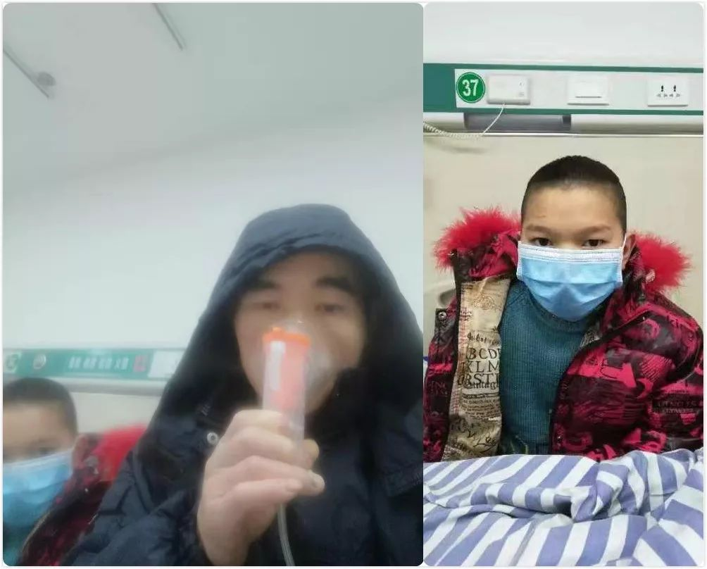
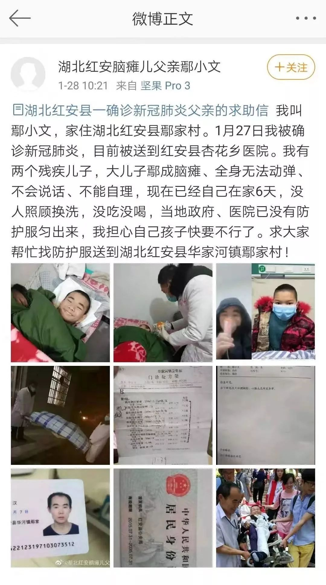

【武汉特稿】围城的第三天 ｜ 舒飞廉_笔会 _ 文汇网
原文链接 备份链接 【武汉特稿】围城的第三天 ｜ 舒飞廉 日期:2020年01月25日 23:43:31 作者:舒飞廉 1月22日深夜武汉市府发布封城令，23日10时封城，隔绝对外交通，武汉进入历史时刻。我留在武汉，没有回老家孝感去。与 …

1月29日下午，湖北黄冈市农民鄢小文接到村委会通知，他17岁的大儿子鄢成刚刚死了。自从1月23日起，鄢小文和11岁自闭症小儿子因疫情防控被隔离，独留患有脑瘫的鄢成在家中，托付村委会照料。
从武汉返乡被隔离
鄢小文是黄冈市红安县华河镇鄢家村人，现年49岁，曾在武汉一家中学食堂当厨师，17岁的大儿子鄢成患有脑瘫，妻子在小儿子满一岁时发现次子又明显异常而崩溃自杀。小儿子后来被确诊自闭症，鄢小文辞职带孩子干预。
1月17日，鄢小文带着两个儿子从武汉汉口乘坐客车，回到了老家村里，准备过年。

脑瘫哥哥鄢成（轮椅内）和自闭症弟弟小伟
据鄢小文告诉大米和小米编辑，在父子三人回家后第3天，他就发起了低烧，“以为是感冒”，就在村里的卫生室输液。1月23日，武汉因为疫情防控“封城”的消息传到鄢家村，仍在发烧的鄢小文就成了重点观察对象。镇卫生院经检查，认为鄢小文疑似被感染。1月24日，鄢小文和小儿子被送到了红安县集中定点收治场所——杏花乡卫生院。
鄢小文与另外一名疑似肺炎患者同住一间病房，没有感染症状的小儿子也和他们睡在一起。“他没有床，白天就坐在旁边椅子上玩手指，晚上就睡我脚头。”

被隔离的鄢小文和自闭症儿子小伟
让鄢小文担心的，除了小儿子在隔离病房很可能会被感染，还有独自在家的大儿子鄢成。鄢成四肢瘫痪，需要有人喂食和全天照顾。为此，他向武汉心智障碍群体公益组织“蜗牛家园”求助，后者又向湖北省残联汇报此事。
鄢小文表示，自己和小儿子被带离家时，大儿子鄢成身体健康，无发烧等异常。
脑瘫儿情况变差
“蜗牛家园”负责人朱文沁说，在省残联的过问下，红安当地的残联找到鄢家村村委会，请求村里给鄢成每天送一顿饭。但是，她很担心鄢成的状况，“整整5天了，孩子大小便不清理怎么过？”
因鄢小文是“蜗牛家园”的骨干会员，所以朱文沁很熟悉鄢家父子，鄢成还曾在朱文沁家里住过一段时间。“他除了瘫痪，还不会说话，只能喊声‘妈妈’。”
据朱文沁介绍，村委会干部告诉她，从1月23日到28日，鄢成在24日下午吃了饭，26日晚上吃了点蛋黄派，28日，则由两名村医喂了两杯氨基酸。
 村委会主任陈敬友发给志愿者的部分现场图
村委会主任陈敬友发给志愿者的部分现场图
而鄢成的二姑告诉大米和小米，1月23日，她去看望鄢成，喂了他一顿饭。1月24日，她又回鄢家给侄子喂了一顿饭，还换了尿不湿。接下来的3天，因为身体不适，她就没去，再到1月28日，她又看到侄子，“情况就很差了。”
“他躺在躺椅上，头悬空着，嘴巴和脸上都是脏东西，被子里面也是。我带有开水，把他嘴上脸上擦干净，换了尿不湿，喂了半杯开水，他吃了小半杯米饭，就不再吃了。”鄢成的二姑说。

1月28日，鄢小文在志愿者协助下曾发求助微博。但据医生介绍，鄢小文至今并未被确诊感染新冠肺炎。
村委会：孩子被抬走后死亡
“鄢成走了。”今天下午15点32分，朱文沁给大米和小米编辑发来微信语音，转告了鄢成的死讯。
15点40分，鄢小文在电话中证实，下午两点3分，村委会通知他鄢成去世的消息。通话中一直咳嗽的鄢小文，断断续续地表达了愿望，想尽快结束隔离，回家见孩子最后一面，处理好后事，并且他也想把儿子的遗体捐献。

鄢小文与村委会陈主任通话截图
而在今天中午12点35分左右，朱文沁还在微信上看到了华家河镇卫生院院长发来的几张照片，上面显示，两名穿着防护服的人正抬着在躺在担架里的鄢成。

朱文沁还通过鄢小文得知，村委已在县城里找了一家隔离用的酒店，要把鄢成送去集中安置，这让朱文沁连连致谢。
“没想到刚过两个小时，我就又收到死讯。”朱文沁说，这些天来，她找残联、找家长组织、找她能找的一切关系，都没有挽回鄢成的生命。“一个全身瘫痪、生活无法自理的孩子，在大冷天里怎么能撑得住？”
几天来，大米和小米编辑一直试图联系鄢家村村委会相关负责人，采访鄢家三口的隔离安置问题，但截至今晚发稿前，对方一直未接听电话。
鄢成到底死于何因，我们将继续关注。
采写|小熊当当 编辑|孙旭阳 图|受访者提供

我是大米
她每天都在为特殊孩子家庭努力
微信扫一扫赞赏作者 赞赏
长按二维码向我转账
她每天都在为特殊孩子家庭努力
受苹果公司新规定影响，微信 iOS 版的赞赏功能被关闭，可通过二维码转账支持公众号。
文章已于修改
原文链接 备份链接 【武汉特稿】围城的第三天 ｜ 舒飞廉 日期:2020年01月25日 23:43:31 作者:舒飞廉 1月22日深夜武汉市府发布封城令，23日10时封城，隔绝对外交通，武汉进入历史时刻。我留在武汉，没有回老家孝感去。与 …
原文链接 备份链接 *************▲************* 四川省巴中市巴州区，一辆鄂A车牌（武汉）轿车的车窗上，贴着红岩社区加盖公章的证明，称车主无感冒发烧现象，且正在家自行隔离。 （杜茂林/图） 全文共*4201*字， …
原文链接 备份链接 据相关数据统计，春节前，有近500万人离开武汉，他们中有近30%的人离开湖北，他们或出差、或进行计划许久的旅行，或回家过年，但伴随着疫情的加剧，他们成了一群「不被欢迎的人」。 一位武汉的小学老师已经连续三年去厦门过年， …
原文链接 备份链接 29.01.2020本文字数：2510，阅读时长大约4分钟 导读：他将自己隔离在家里的主卧室里，自己和家人都戴着口罩和手套，偶尔他们会聊天，中间隔着紧闭的房门。 作者 | 第一财经 安卓 1月27日凌晨1点，汉口的刘 …
原文链接 备份链接 这段时间，除了关于疫情本身的讨论，一些新的话题不断加入。单读征文今天的来信，来自一位选择离开家乡的武汉人。武汉人在外省的处境令人堪忧，从直面病毒的恐慌，到遭遇歧视的愤懑，武汉人不仅是这场疫情中最直接的受害者，还成为后续 …